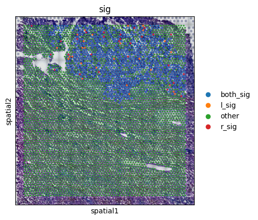

Spatial communication - cell level
Read and preprocessing
[1]:
import warnings
warnings.filterwarnings("ignore")
import scanpy as sc
import pandas as pd
import numpy as np
import SOAPy_st as sp
[2]:
adata = sc.read_visium(path=r'C:\Users\Administrator.DESKTOP-MAL5PKV\Desktop\jsy-ST\A_230357',
count_file='filtered_feature_bc_matrix.h5'
)
annotation = pd.read_csv(r'C:\Users\Administrator.DESKTOP-MAL5PKV\Desktop\jsy-ST\Q2_TSF-high\A.csv',
header=0, index_col=0
)
lr_data = pd.read_csv(r'C:\Users\Administrator.DESKTOP-MAL5PKV\Desktop\Human-2020-Jin-LR-pairs.csv',
header=0, index_col=0
)
adata.obs['cluster'] = annotation.loc[adata.obs_names, 'TSF_type']
[ ]:
adata.var_names_make_unique()
sc.pp.filter_genes(adata, min_counts=10)
sc.pp.filter_genes(adata, min_cells=2)
sc.pp.normalize_total(adata, inplace=True)
sc.pp.log1p(adata)
[3]:
lr_pairs = sp.tl.lr_pairs(
lr_data=lr_data,
Annotation_key='annotation',
ligand_key='ligand_symbol',
receptor_key='receptor_symbol'
)
lr_pairs.get_complexes()
[4]:
sp.tl.cell_level_communications(
adata=adata,
lr_pairs=lr_pairs,
secretory_key='Secreted Signaling',
contact_key='Cell-Cell Contact',
secretory_radius=200,
n_iters=1000,
)
sp.tl.cell_level_communications(
adata=adata,
lr_pairs=lr_pairs,
species='receptor',
secretory_key='Secreted Signaling',
contact_key='Cell-Cell Contact',
secretory_radius=200,
n_iters=1000,
)
There are 806 cell-cell contact ligand-receptor pairs in sample
In contact mode, The average number of neighbors is 5.690730106644791
In contact mode, total of 0 spots have no neighbors
806 contact ligand-receptor pairs.: 100%|█████████████████████████████████████████████████████████ [ time left: 00:00 ]
Updated adata.uns[lr_summary]
There are 1199 secreted ligand-receptor pairs in sample
In secretory mode, The average number of neighbors is 211.77091878589007
In secretory mode, total of 0 spots have no neighbors
1199 secretory ligand-receptor pairs.: 100%|██████████████████████████████████████████████████████ [ time left: 00:00 ]
WARNING:root:adata has not been initialized, and adata.uns['SOAPy'] has been established
Updated adata.uns[lr_summary]
There are 806 cell-cell contact ligand-receptor pairs in sample
In contact mode, The average number of neighbors is 5.690730106644791
In contact mode, total of 0 spots have no neighbors
806 contact ligand-receptor pairs.: 100%|█████████████████████████████████████████████████████████ [ time left: 00:00 ]
Updated adata.uns[lr_summary]
There are 1199 secreted ligand-receptor pairs in sample
In secretory mode, The average number of neighbors is 211.77091878589007
In secretory mode, total of 0 spots have no neighbors
1199 secretory ligand-receptor pairs.: 100%|██████████████████████████████████████████████████████ [ time left: 00:00 ]
Updated adata.uns[lr_summary]
[4]:
AnnData object with n_obs × n_vars = 4877 × 33538
obs: 'in_tissue', 'array_row', 'array_col', 'cluster'
var: 'gene_ids', 'feature_types', 'genome'
uns: 'spatial', 'SOAPy'
obsm: 'spatial'
[5]:
comm = adata.uns['SOAPy']['ligand_cell_comm_score']
ligand_cell_communication = pd.DataFrame(comm['contact_affinity']['p_vals'], index=adata.obs_names,
columns=comm['contact_names'])
ligand_cell_communication['COL1A1:ITGA1&ITGB1'].tolist()
comm = adata.uns['SOAPy']['receptor_cell_comm_score']
receptor_cell_communication = pd.DataFrame(comm['contact_affinity']['p_vals'], index=adata.obs_names,
columns=comm['contact_names'])
adata.obs['sig'] = 'other'
for index in adata.obs_names:
ligand_sig = ligand_cell_communication.loc[index, 'COL1A1:ITGA1&ITGB1']
receptor_sig = receptor_cell_communication.loc[index, 'COL1A1:ITGA1&ITGB1']
if ligand_sig < 0.05 and receptor_sig < 0.05:
adata.obs.loc[index, 'sig'] = 'both_sig'
continue
elif ligand_sig < 0.05:
adata.obs.loc[index, 'sig'] = 'l_sig'
continue
elif receptor_sig < 0.05:
adata.obs.loc[index, 'sig'] = 'r_sig'
continue
sc.pl.spatial(adata, img_key="hires", color=["sig"])
